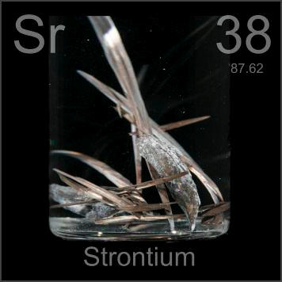

HOME
PREVIOUS
NEXT

Strontium
Atomic Weight: 87.62
Density: 2.63 g/cm3
Melting Point: 777 °C
Boiling Point: 1382 °C
Strontium is often thought of as radioactive, because Sr-90 is a component of nuclear fallout. In fact normal strontium is not radioactive and is used in household products such as safe glow-in-the-dark paint.